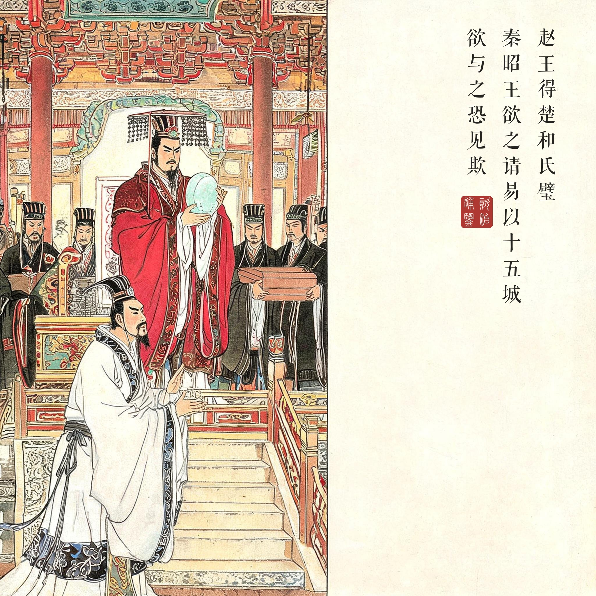
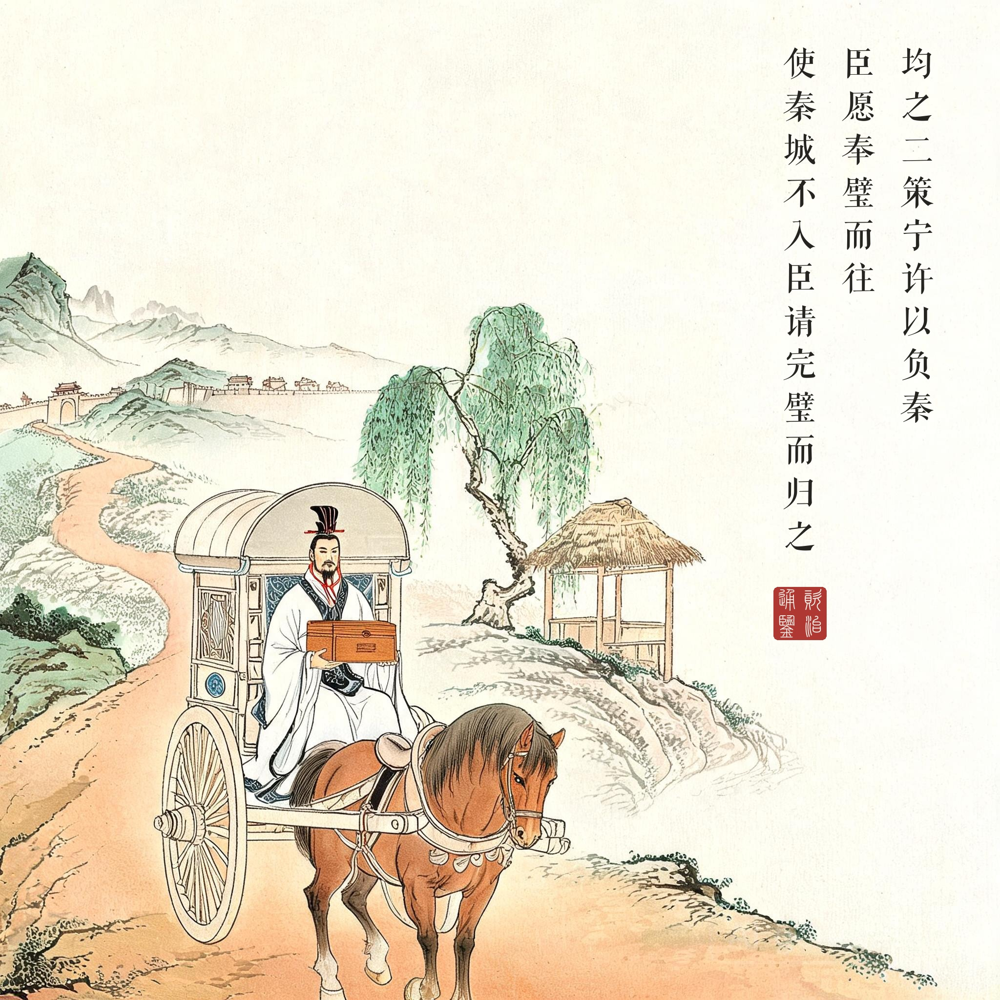
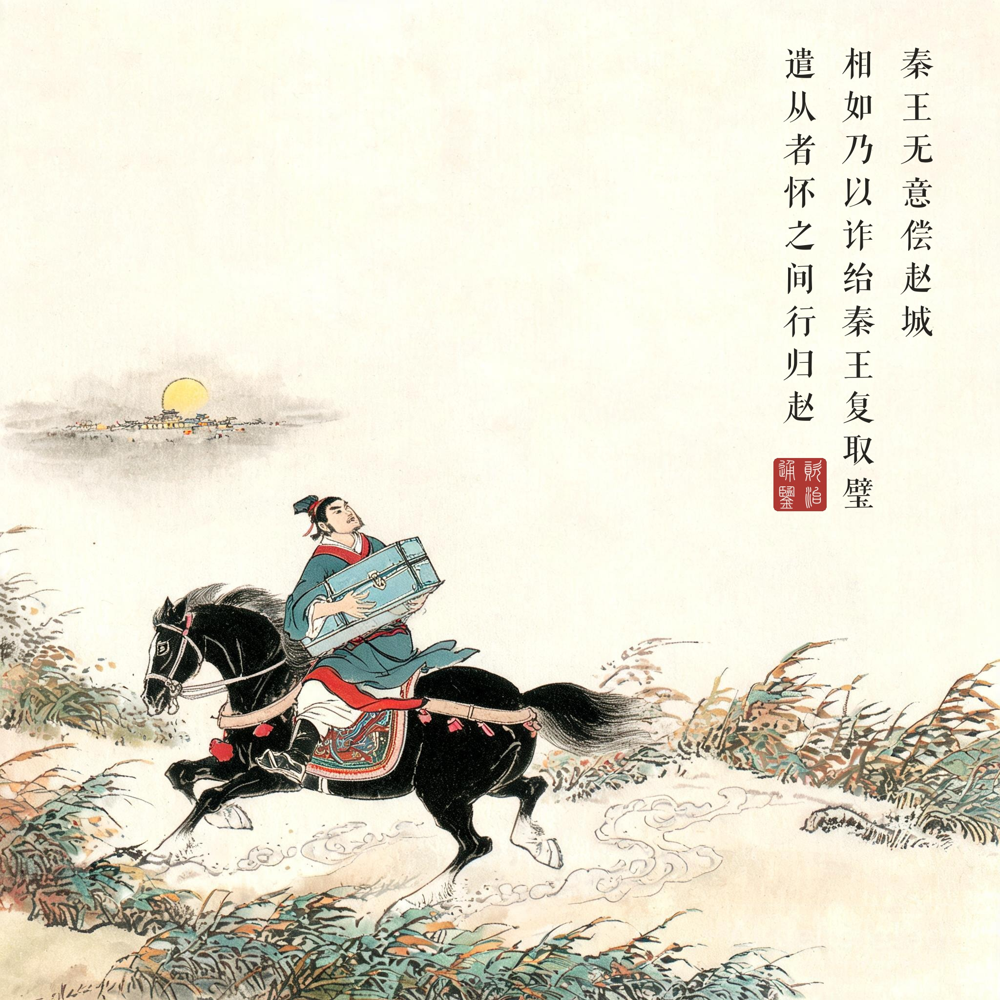
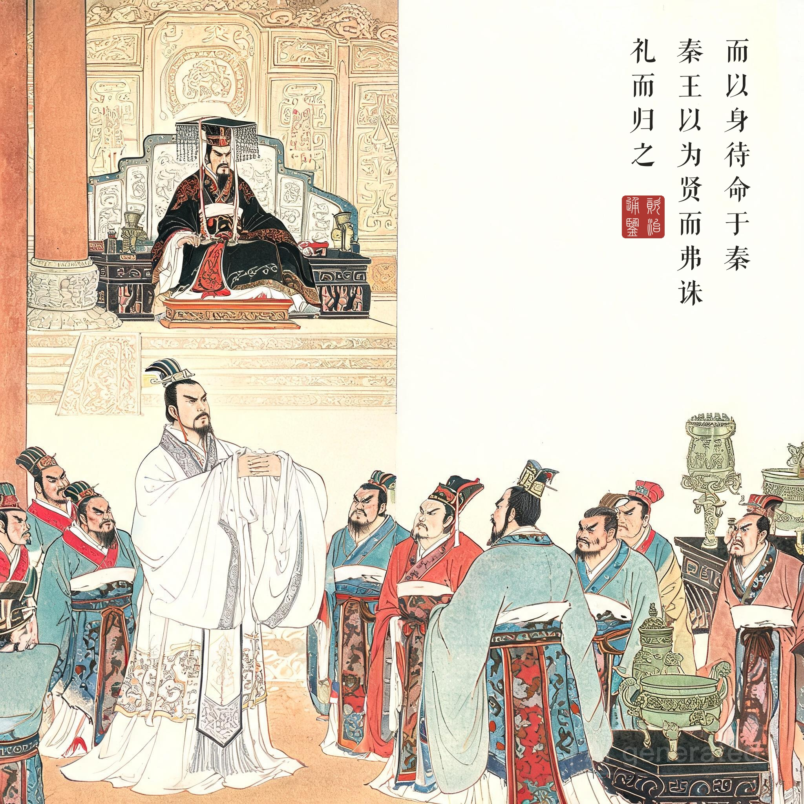

《资治通鉴 · 卷第三 · 周纪三》赧王三十二年（公元前 283 年）
（据 daizhigev20《资治通鉴》底本节录。按：《通鉴》此段为《史记 · 廉颇蔺相如列传》的节写，"持璧睨柱、怒发冲冠"诸细节为《史记》所有；本书题款皆取《通鉴》原文）
赵王得楚和氏璧，秦昭王欲之，请易以十五城。赵王欲勿与，畏秦强；欲与之，恐见欺。以问蔺相如，对曰："秦以城求璧而王不许，曲在我矣；我与之璧而秦不与我城，则曲在秦。均之二策，宁许以负秦。臣愿奉璧而往；使秦城不入，臣请完璧而归之。"赵王遣之。
相如至秦，秦王无意偿赵城。相如乃以诈绐秦王，复取璧，遣从者怀之，间行归赵，而以身待命于秦。秦王以为贤而弗诛，礼而归之。赵王以相如为上大夫。
赵王得到了楚国传来的和氏璧，秦昭王想要，提出用十五座城来交换。赵王不给吧，怕秦国强大；给吧，又怕被欺骗。拿这事问蔺相如，他答："秦国拿城求璧，大王不答应，理亏在我们；我们把璧给他而秦国不给城，理亏在秦国。两害相权，宁可答应，让秦国担上理亏之名。臣愿意捧着璧出使——倘若秦国不给城，臣定让璧完好无损地回到赵国。"赵王便派他去了。
蔺相如到了秦国，见秦王全无偿城之意，就用计诓回宝璧，派随从揣着它抄小路潜回赵国，自己留下听凭处置。秦王反倒认为他是贤者，没有杀他，以礼相待送他回国。赵王拜蔺相如为上大夫。
"完璧归赵"到底归的是什么。《通鉴》这六十一字比《史记》冷静得多：没有睨柱、没有冲冠之怒，只有三步——诓璧、间行、待命。妙就妙在第三步：璧已经走了，使者留下，把"失信"的责任整个接了过来。秦王不诛，反倒"以为贤而弗诛"——相如赌的是秦昭王还要脸：杀一个保全国宝、坦身受戮的使者，天下人会怎么议论？这就是弱国外交的全部技术：把对手架到"理"的高处，让他的傲慢没地方落脚。
一张十五城的空头支票。易城之请从头就是讹诈的试探：璧先过手、城后交割，先付货后给钱——战国版"先款后货"骗局的反向操作。赵国君臣的困境在开场就写透了："欲勿与，畏秦强；欲与之，恐见欺"——小国面对强邻的每一次选择，都先输一半。蔺相如的方案（宁许以负秦）本质是把战场从玉璧移到道义：你要东西可以，但名分上先理亏给你记上。
读画小识。第二幕奉璧西行的轺车、第三幕夜携宝匣疾驰的从者，与第四幕大殿之上昂然而立的相如，正对应原文"奉璧而往——间行归赵——以身待命"三步；第四幕相如独对满殿而不屈，是全回的落点：璧是死的，人的节是活的。